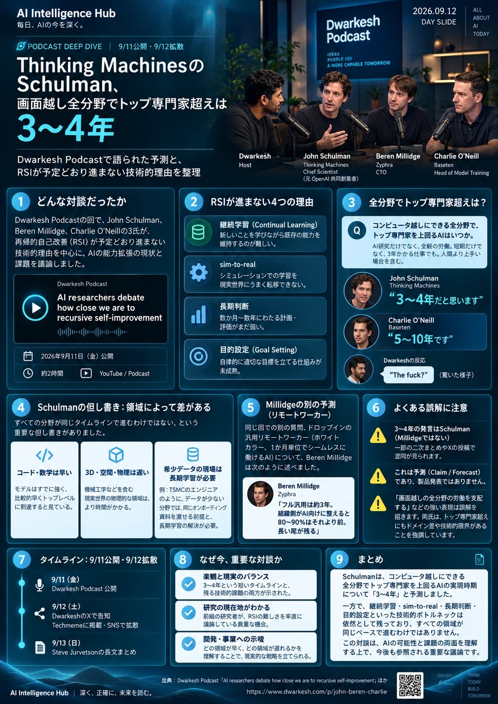

ONE-PAGE BRIEF / 1枚ボード

一次書き起こしに基づく本号の図解。数字は個人予測であり、企業のロードマップでも独立した性能測定でもない。装飾に生成画像を使用し、文字・数値は別途組版。出典：公式書き起こし [1]。画像は images/0912/cover.jpg を相対参照。
画像の内容をテキストで読む
同じ質問：コンピュータ上の全分野で、トップ専門家を上回る時期。Schulmanは3〜4年、Charlieは5〜10年。3年かかる仕事も対象。
別の質問：1か月単位で任せられる汎用リモートワーカー。Millidgeは約3年。AI向けの環境整備で80〜90%はそれより早いとの予測だが、長い尾が残る。
本号は課題を、継続学習、現場への適応、長期判断、目的設定の4つに整理。Schulmanはコード・数学の先行、3D・物理・希少データ領域の遅れを補足し、同じオンボーディング資料と長期学習の解決を前提としている。
読み分け：「確認済み」は発言・掲載の確認。「予測」は将来の見通し。「本号の解説・提案」は、理解や実務への応用のための整理です。
SOURCES & EDITORIAL NOTES
出典と、情報の確認範囲
ニュースの核は一次書き起こし。技術の補足には出演者本人の記事・論文とMETRの測定資料を使用。Xの要約を、発言の一次資料の代わりにはしていない。すべて2026/09/14に再確認した範囲。
- Dwarkesh Podcast — AI researchers debate how close we are to recursive self-improvement公式ページ・2026/09/11。発言者、出演時の肩書き、質問の違い、Schulmanの3〜4年と但し書き、Charlieの5〜10年、Millidgeのリモートワーカー予測の一次資料。冒頭と末尾を確認。タイムライン質問群は1:28:32から。
- Apple Podcasts — 同回の配信情報Published表示：2026/09/11 16:28 UTC。JSTへ換算すると9/12 01:28。長さは1時間37分。JSTで9/12号にする根拠に使用。
- Techmeme — 2026/09/12付ページ内の対談掲載ページ内に対談と出演者らのX投稿へのリンクを掲載。URLの主見出しは別記事で、本対談はページ内のニュース項目。初回掲載時刻やXの正確な表示時刻を確定する資料としては使わない。
- Charlie O’Neill — Trying to actually define continual learning2026/09/02。文脈・外部記憶・重みや学習された記憶の違い、継続学習の定義に関する本人の論考。記載された見解は、分野全体で合意された唯一の定義ではない。
- Charles O’Neill — Can a Language Model Learn Facts Continually in Its Weights?arXiv:2607.11020v2。初稿2026/07/13、改訂7/14。Qwen3への架空の事実の逐次書き込みを扱うプレプリント。1%・46%は同研究の条件下の値。汎用AI全体の性能、業務の成功率、将来の限界を示す数値ではない。
- METR — Task-Completion Time Horizons of Frontier AI Models人間の専門家の所要時間と、AIの成功確率に基づく指標の定義。取得ページの更新表示は2026/05/08。現行課題群で16時間を超える測定は信頼性が低い旨を注記。最新モデルの最高値を推定するためには使っていない。
- METR — Have We Seen an Acceleration in Discoveries?2026/08/14、Tom Cunningham・Nate Rush。脆弱性、数学、最適化の公開された発見の時系列を分析する研究ノート。非公開の成果を含まず、観察結果の解釈とデータ誤りへの留保がある。
- Charlie O’Neill — The final form of work2026/09/10。AIが問題を解く社会で「どの問題を解くか」を選ぶ重要性を論じる本人の将来観。職業の存続や需要を実証した資料ではない。
- Beren Millidge — Many Benefits Of AGI Could Still Be Realized In A Pause2026/09/08。対象を絞った停止と、他領域への資源配分を論じる政策提案。本号は、その安全性についての全ての評価を確定事実として採用していない。
- Dario Amodei — We Must Pace the Frontierページの日付表示はSeptember 2026。pacingと全面停止の区別、第三者評価・協調の提案に使用。9/14確認の関連背景として扱い、このページ単独から正確な投稿日やJST時刻を断定しない。
- Dohare et al. — Maintaining Plasticity in Deep Continual LearningarXiv:2306.13812v3（2024/04/09）。継続学習での可塑性低下と緩和手法の背景研究。画像分類等の実験であり、2026年のフロンティアLLMすべてへの同一結果を意味しない。
- Charlie O’Neill — 本人のプロフィールと研究一覧9/14確認時の記載は、Basetenの研究組織Base Labsを率いるというもの。出演時の番組紹介と、現在の本人サイトの表現を区別。
- Steve Jurvetson — 対談の長文要約（参考）提供されたメモの日時は9/12 20:21 GMT＝9/13 05:21 JST。今回、X原ページの本文・表示時刻を独立に再取得できず、予測の帰属はこの投稿でなく[1]で確認。9/12 JSTの拡散根拠には使用していない。
編集上の区別
このページは2026/09/12号を、9/14の調査時点から整理したものです。対談の要点は提供メモを一次資料と照合し、追加の論考・研究を補足しました。「3〜4年」「約3年」「5〜10年」は定義の異なる質問への個人予測で、会社の計画、合意予測、確率付きの推計ではありません。本文の業務例、概念図、計算、検証テンプレート、SO WHATは本号の解説・提案です。正確に確認できなかったX時刻は、その旨を明記しました。
このページは2026/09/12号を、9/14の調査時点から整理したものです。対談の要点は提供メモを一次資料と照合し、追加の論考・研究を補足しました。「3〜4年」「約3年」「5〜10年」は定義の異なる質問への個人予測で、会社の計画、合意予測、確率付きの推計ではありません。本文の業務例、概念図、計算、検証テンプレート、SO WHATは本号の解説・提案です。正確に確認できなかったX時刻は、その旨を明記しました。